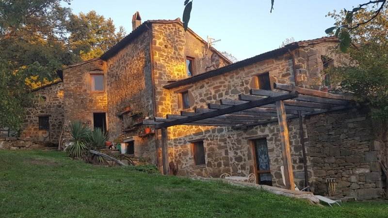

Appartamenti
La struttura ricettiva è composta da quattro appartamenti indipendenti, con un annesso esterno che ospita sauna e idromassaggio.
Nel giardino e’ presente una piccola piscina, un angolo attrezzato con barbeque e forno a legna ottimo per organizzare una cena o un pizza party. Tutto intorno il fresco giardino con svariati angoli arredati, poco oltre, i boschi.
Petra
L’appartamento Petra è costituito da un ampio soggiorno, 2 camere letto, un bagno, un cucinotto; ideale per 4 /5 ospiti. Il Petra è collegabile con il Fonte, monolocale con un mezzanino e un bagno, per ulteriori 2 ospiti. Oltre al riscaldamento con termosifoni è dotato di termo camino a legna.

Brezza
L’appartamento Brezza è costituito da un soggiorno, suddiviso in due spazi, una ampia cucina e un bagno al piano terra; al piano superiore due camere da letto e un bagno. Per di 4/5 ospiti Nel giardino di pertinenza dell’appartamento si trova una Hot Tub a legna Oltre al riscaldamento con termosifoni e’ dotato di stufa a pellet
Ciliegio
L’appartamento Ciliegio ha un soggiorno con angolo cottura, e un bagno con doccia al piano terra, al piano superiore ci sono 2 camere da letto. Ideale per 4-5 ospiti Oltre al riscaldamento con termosifoni e’ dotato di stufa a pellet
Fonte
L’appartamento Fonte dispone di un soppalco con letto matrimoniale, e sotto un piccolo soggiorno con un sofà letto, un angolo cottura, e il bagno, per 2-3 ospiti Il Fonte è collegabile con il Petra, per un totale di 6/7 posti Oltre al riscaldamento con termosifoni e’ dotato di stufa a pellet
Relax e Benessere
Sauna, idromassaggio e piscina: La sauna (per 4-5 persone) si trova nel locale relax, insieme ad un idromassaggio per 3 persone. Poco oltre una piscina e non solo...